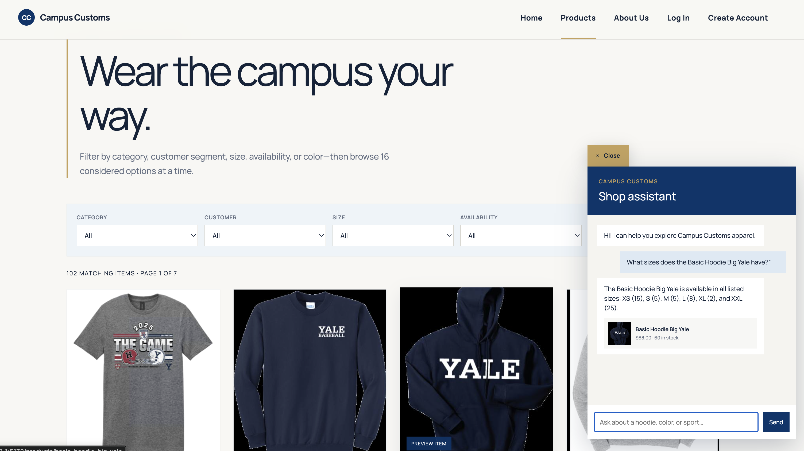
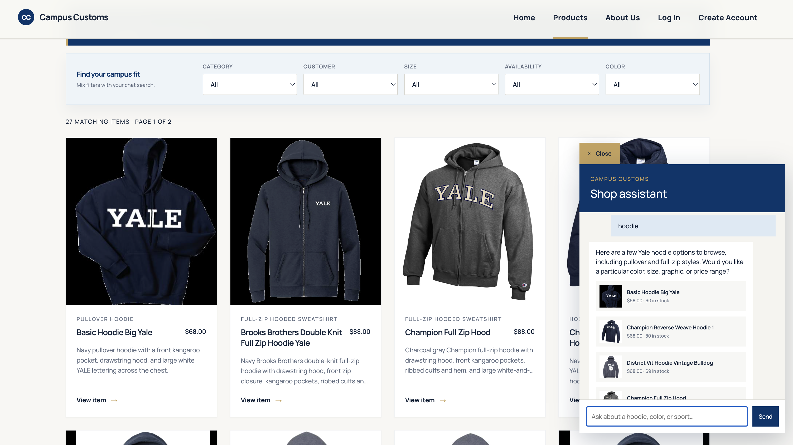
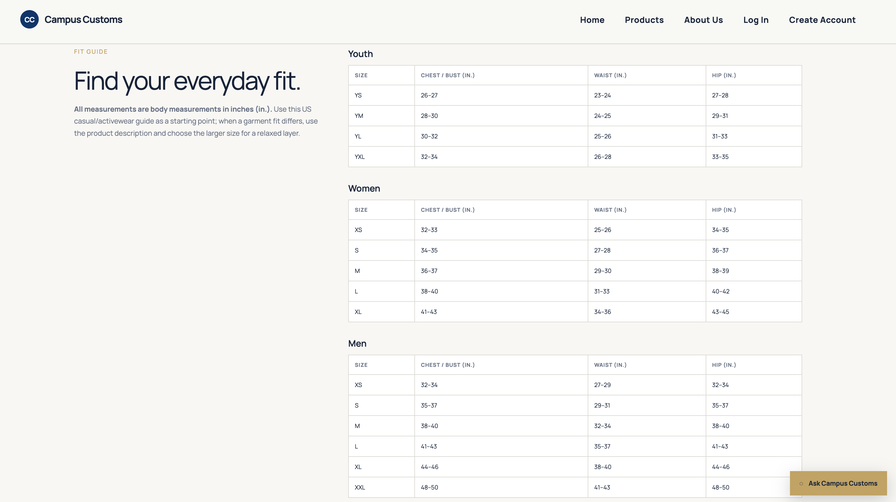

Campus Customs — App Check
Local test URL: http://127.0.0.1:5174
Each screenshot below is linked with a relative path for grading.
1. Chat inventory lookup
Test: Ask the chat for the price and stock by size of a product, such as “What sizes does the Basic Hoodie Big Yale have?”
Expected: The assistant reports the database-backed description, price, and size-level quantities.

2. Dynamic search-result cards
Test: Ask the chat to show a category, such as “Show me Yale crewneck sweatshirts.”
Expected: The normal Products grid immediately filters to matching cards, retains its product filters and pagination, and each card links to the full product-detail page.

3. Usability improvement: size chart
Test: Open any product card and scroll to the Fit Guide.
Expected: Youth, Women, and Men standard size tables remain readable and label chest/bust, waist, and hip in inches (in.).
